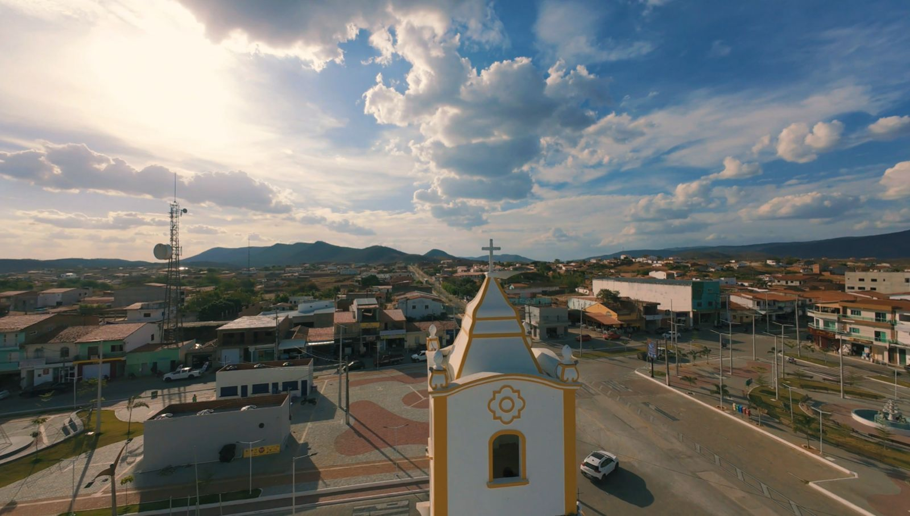

Uma história de fé gravada em pedra e devoção
Seja muito bem-vindo(a)! Junte-se a nós em oração, celebre conosco a Eucaristia e faça parte de uma comunidade ativa que caminha unida na Graça do Pai.

Horários de Celebrações
Venha participar da nossa vida comunitária e crescer na fé.
Seja um Doador
Contribua com a evangelização e manutenção da nossa paróquia.
"Deus ama quem dá com alegria." — 2Cor 9,7
Nossa História
Conheça a trajetória, a fé e as memórias da nossa Igreja Matriz ao longo dos anos.

Os Primeiros Passos
A história da Igreja de Nossa Senhora do Carmo está profundamente ligada às origens do Distrito de Lagoa do Mato. Em meados de 1889, entre as fazendas Retiro, Malhada Real, Feijão, São Joaquim, Sussuarana e Meirús, foi instalada a Fazenda Lagoa do Mato por Antônio Honorato da Silva...

A Construção da Matriz
A primeira Capela de Nossa Senhora do Carmo foi construída durante a administração dos Padres Capuchinhos da Paróquia de Canindé e apresentava características arquitetônicas inspiradas no estilo neogótico. Sua fachada possuía três portas simétricas, elementos em alto-relevo representando uma flor central, cruzes ornamentais e pináculos que conferiam imponência ao pequeno templo...

Um Legado de Fé
Mais de um século após a construção da primeira capela, a história da Igreja de Nossa Senhora do Carmo continua sendo escrita por milhares de fiéis que mantêm viva a tradição recebida de seus antepassados...